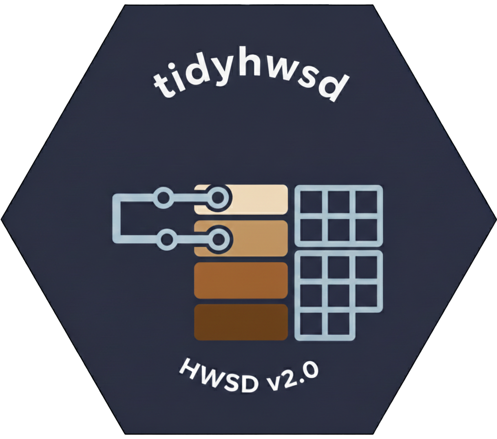

Tidyverse-friendly access to the Harmonized World Soil Database (HWSD) v2.0.
Website: https://rimagination.github.io/tidyhwsd
Motivation & Rationale
HWSD 2.0 is a component-based soil association dataset: a single SMU x layer can contain multiple components, each with a SEQUENCE and SHARE. The previous pre-collapsed table obscured this structure and forced implicit choices (e.g., dominant-only). This version uses the component table as the single source of truth and exposes explicit aggregation options (dominant vs. share-weighted, categorical mode vs. distribution). Defaults remain reasonable and compatible with prior behavior, while enabling transparent, configurable analysis.
Installation
install.packages("remotes")
remotes::install_github("Rimagination/tidyhwsd")Workflow
- Download the HWSD index grid once. The directory is created if needed. The download is several GB, so plan for disk space and time. If your network is slow, you can manually download the grid zip from FAO (HWSD Raster v2.0) and extract it into the target folder so it contains
HWSD2.bil(thenhwsd_download()will skip the download step).
library(tidyhwsd)
# Replace with your preferred path, or set WS_PATH in ~/.Renviron
hwsd_download(ws_path = "D:/data/HWSD2", verbose = TRUE)- Point query. Returns dominant component values.
pt <- hwsd_extract(
coords = c(110, 40),
param = c("SAND", "PH_WATER"),
layer = "D1",
ws_path = "D:/data/HWSD2"
)Optional: share-weighted synthesis with per-variable rules:
props <- hwsd_props()
pt_syn <- hwsd_compose(
coords = c(110, 40),
param = c("SAND", "PH_WATER"),
layer = "D1",
ws_path = "D:/data/HWSD2",
props = props
)Multiple points can be provided as a data frame or tibble:
sites <- data.frame(
lon = c(120, 121.5),
lat = c(30, 31.2)
)
pt_multi <- hwsd_extract(
coords = sites,
param = "SAND",
layer = "D1",
ws_path = "D:/data/HWSD2"
)- Bounding box query. Returns a SpatRaster; tiling improves performance for large areas.
sand <- hwsd_extract(
bbox = c(70, 18, 140, 54),
param = "SAND",
layer = "D1",
ws_path = "D:/data/HWSD2",
tiles_deg = 5,
cores = 4,
internal = TRUE
)
terra::plot(sand)- Categorical data extraction (e.g., Drainage Class). Returns a factor raster with labels:
drainage <- hwsd_extract(
bbox = c(110, 30, 112, 32),
param = "DRAINAGE",
layer = "D1",
ws_path = "D:/data/HWSD2"
)
terra::plot(drainage)- Discover available properties:
Environment Variable
To avoid specifying ws_path in every call, add the following to your ~/.Renviron file:
WS_PATH=D:/data/HWSD2Then restart R. The package will automatically use this path.
Plotting
For ggplot2 workflows, install tidyterra and use it to draw SpatRaster objects:
install.packages("tidyterra")
library(ggplot2)
library(tidyterra)
ggplot() + tidyterra::geom_spatraster(data = sand)